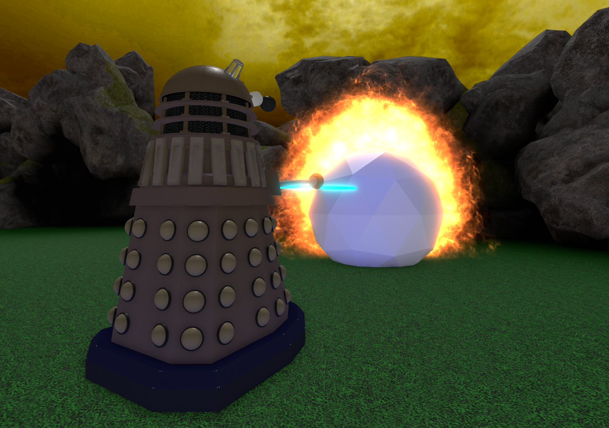
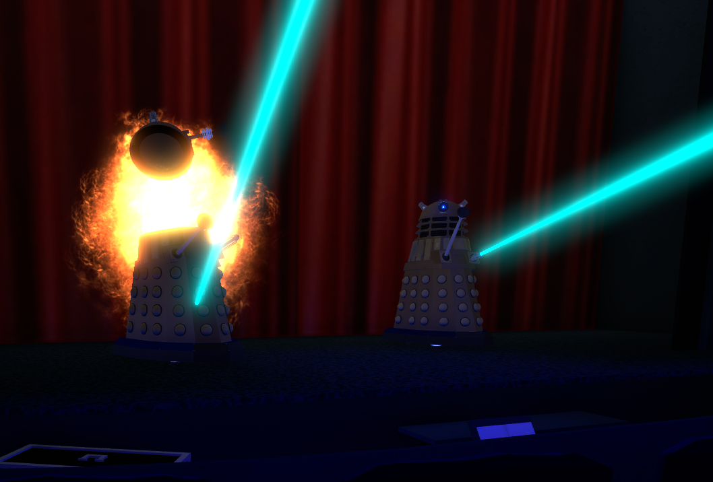

Dalek Sec is an extremely high ranking dalek said to be above the Dalek Emperor himself! Sec began as a regular bronze Dalek. After proving himself by exterminating the Mechanoids during their war on Magella, Sec was appointed as the leader of the Cult of Skaro. He was then upgraded to so that his casing was made of Metalert, an extremely strong alloy of Dalekanium.
During the later stages last great Time War, both sides could see the havoc the destruction the the war was bringing to the universe. The Cult of Skaro stole the Genesis Ark and escaped the universe in a Void Ship to ensure the survival of the daleks. After the war, they were returned to the universe to find that the Cybermen had used the crack between worlds to invade london in our universe. They then used the Genesis Ark to unleash millions of Daleks to destroy the Cybermen

After the Battle of Canary Wharf, the Cult of Skaro escaped to New York City in 1930. Because they head used their ability to Emergency Temporal Shift, their power cells had become damaged and were limited on options. They then devised a plan to create a race of Dalek-Human Hybrids to ensure the survival of the Dalek Race. Dalek Sec also voulenteered to become the subject of the Final experiment, a plan to Features the body of a human and a dalek to allow the daleks to leave their casing. Towards the end of their plan, a spanner was thrown in the works as The Doctor showed up once again, mixing time lord D.N.A. into the hybrid humans and causing them to Rebel against the daleks causing a fight that leaves only the last of the Cult of Skaro alive, who then emergency temporal shifts into the Time War to escape.